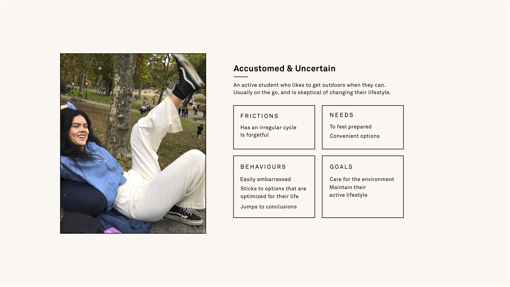
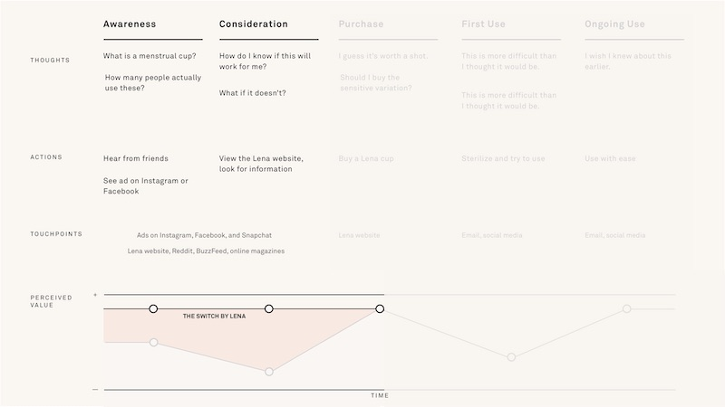
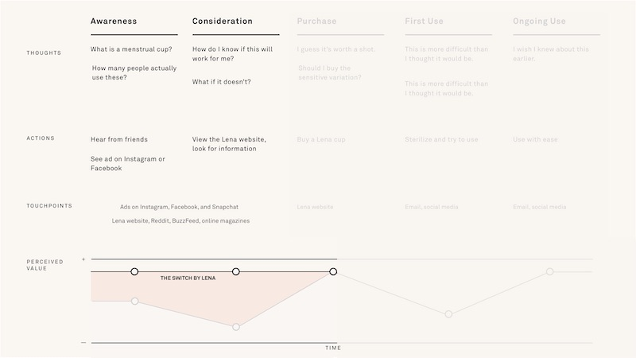

Web Extension
The Switch By Lena
The Switch by Lena aims to address misconceptions and apprehensions to make people feel more comfortable with trying a menstrual cup.
Team
Kristina Kim
Elizabeth Lo
Macguire Rintoul
Isabelle Soares
Jordan Yep
My Roles
Experience Design
Interface Design
Visual Design
User Research
Tools
Sketch
Keynote
Adobe Creative Suite
Duration
The research for this client was conducted over 1 week. This project was created over a period of 3 weeks.
Brief
For this senior level course, the objective is to find a client and a business problem with an opportunity for a digital intervention. This project is not affiliated with Lena.
Spilled Milk
This project first started as part of the 2018 UBC eProject LiteHack competition and later inspired the Lena project. SpilledMilk was created in 7 hours and placed third.
Team
Chris Ho
Macguire Rintoul
Alexa Tarrayo
My Roles
Experience Design
Interface Design
Visual Design
Tools
Sketch
Keynote
Adobe Creative Suite
Duration
As part of the 2018 UBC eProject LiteHack competition, this project was created over seven hours.
Brief
LiteHacks is a code-free hackathon. The goal was to conceptualize, develop, and tweak a product idea into a prototype and business strategy.

The Switch
A web extension that aims to address misconceptions and apprehensions to make people feel more comfortable with trying a menstrual cup.
Problem
Product Apprehension
Lack of exposure in mainstream media compared to other menstrual products has slowed the normalization of cups.
“They seem really cool and good for the environment! I'm just scared to get started. What if it hurts? Will it leak? How do you take it out?”
“Pads and tampons have commercials all the time on TV but most resources I've seen are on YouTube and the internet, you mostly have to look for the info yourself.”
Responses from “Menstrual Cup Questionnaire” (2018) — 457 respondents
Established Habits
The majority of people that menstruate already use tampons, pads, or liners and aren’t motivated to take a physical and emotional risk.
Schwedel, H. (2015)
“I can see their benefit, but haven't considered purchasing one. It took a while to get into a regular routine with pads and tampons to know exactly which kind work best for me.”
“It's just one of those things where I'm comfortable with the options I'm currently using but I'm sure if I gave it a little more thought I could see the reasons for switching over.”
Responses from “Menstrual Cup Questionnaire” (2018) — 457 respondents
Opportunity
Currently, Lena's existing website's information is disorganized and spread throughout the site. Less important things like pH levels and photos are presented before getting to the point and they describe the product, but does not effectively explain how it is better.
After a content audit of the website and doing extensive research, we discovered four main opportunities:
- Leveraging Lena’s status as #1 Beginner Cup could create the perception of an easy switch.
- Addressing the apprehensions of first-time customers could help turn skeptics into supporters.
- Shifting Lena’s brand positioning toward gender neutrality could be more inclusive of all menstruators on the gender spectrum.
- Contributing to the open discussion of periods.
Solution
Landing Page
Clear message leveraging brand status and a reason for the visitor to click on the call to action.
Lena’s existing content remains below, and The Switch can also be accessed under ‘Using Lena’.
Primary Information
The key points present the essential information to owning a menstrual cup. The sequence addresses common pain points brought up in user testing and the questionnaire.
Secondary Information
More details are available for each section of the onboarding if people are interested or have follow-up questions.
Purchase
Lena has experienced cup users ready to provide personal support, something which is only emphasized in the post-purchase stage.
Lena also offers a full refund if the customer is not happy with the Lena Cup.
Process
Insights
Researching into our opportunities, we focused in on three main insights:
Period Taboo
As an unspoken topic, menstruators may not feel comfortable discussing their concerns.
Gender Dysphoria
A conflict between a person’s physical or assigned gender and the gender with which they identify.
Lifestyle Change
Despite the learning curve, some see it as an “upgrade” from other menstrual products.
Menstruator Segments
These were the different cup menstruators we were looking at:
Strongly Opposed
“I would feel gross re-using a cup, and having to empty out my blood from that cup grosses me out.”
Survey Respondent
Accustomed & Uncertain
Members who have applied for loans but were not approved, or were not able to get the interest rate they wanted due to their credit score.
“I would consider if I knew more about them I think. I’d be uncertain about how to use it, and what to do with it when it’s not being used.”
Survey Respondent
Unsuccessful Switch
“In general, I think they're necessary and I need to be using them more, but I worry about comfort throughout the day and leakage.”
Survey Respondent
The Switch focuses on the Accustomed & Uncertained because we felt that the Strongly Opposed are unlikely to make the change and that Lena already has a lot of resources for the Unsuccessful Switch.
Persona
This is our persona. She is an active student who likes to get outdoors when they can. She's usually on the go, and is skeptical of changing their lifestyle.
Journey Framework
In the current Vancity experience, resources for cup users are hard to find and scattered throughout the website.
The Switch intervenes at the awareness and consideration stage, it aims to help convert open skeptics into cup menstruators by providing clear and concise information in a comfortable and conversational way.
 

Entice/ Discovery
Because Lena is an online brand, social media is a seamless touchpoint.
Instagram ads can capture mobile customers as well as promote the Lena account.
Extend/ Stories
Lena’s stories section currently doesn’t have personal stories related to menstrual cups, which have helped new customers relate in other cases.
After 2 months, Lena will reach out to customers to check in and make sure the Lena cup is working for them, with an opportunity to have their story added to the stories section.

Entice/ Discovery
Additionally, Facebook ads can capture desktop users and promote Lena’s page.
Evaluation
Feasible
“As a small company growing into our fourth year, I am sorry to say that we are limited in our time and resources. We are a small team working across a few different time zones.”
Lena representative in response to interview request